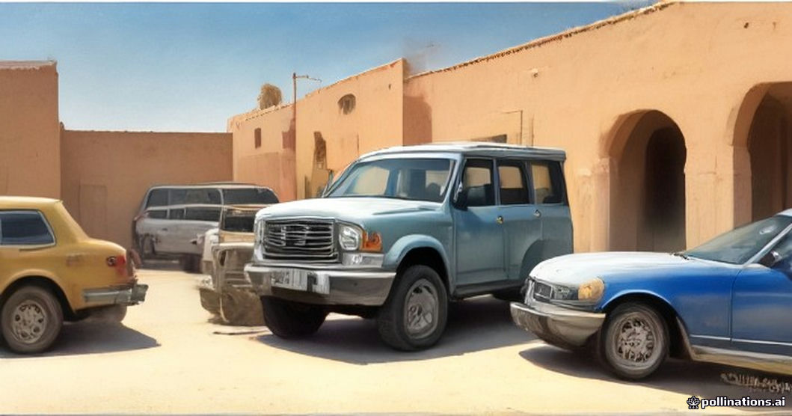

Driving a rental car through Morocco is a great way to see the country independently, but navigating the old medinas of Marrakesh and Fes with a vehicle is genuinely stressful. If you are joining a private desert tour from either city to Erg Chebbi, you will want a safe, reliable place to leave your car for a few days without worrying about dings, break-ins, or exorbitant fees.
As local operators who run routes out of both cities, we get asked about vehicle storage constantly. Street parking in the medina is never an option for multi-day trips. Instead, you need official enclosed garages, guarded hotel lots, or managed parking spaces where attendants take real responsibility for your vehicle.
The Reality of Medina Parking
Trying to park a rental car inside the medinas of Marrakesh or Fes is physically impossible due to narrow alleys, pedestrian crowds, and dead ends. Even getting close to your riad usually involves aggressive self-appointed parking attendants who demand cash for street spots with zero security.
For multi-day tours, street parking is a liability you want to avoid. Look instead for municipal underground garages, guarded surface lots (known locally as 'gardien de nuit' lots, though you want a 24-hour monitored commercial one), or parking arrangements coordinated directly through your accommodation.
- Never leave luggage visible inside a parked car, even for an hour.
- Ask your riad in advance if they have a partner garage.
- Keep your rental agreement and insurance papers in your daypack, not the glove box.
Where to Park in Marrakesh
In Marrakesh, the best option is usually a secure parking structure near the edges of the old city, such as the subterranean lots near Koutoubia Mosque or near Jemaa el-Fnaa (like Parking el-Koutoubia). These are well-lit, have constant staff, and charge standard daily rates around 30 to 50 dirhams.
Alternatively, if your desert tour starts with a pickup from your riad, many hotels in the Gueliz new town or secure pockets of the Kasbah can help arrange secure gated parking nearby. Read more about arrival logistics in our marrakesh riad pickup logistics guide.
Where to Park in Fes
Fes El Bali is notoriously difficult to approach by car. The major access gates like Bab Bou Jeloud or Place R'cif have designated guarded parking lots immediately outside the ancient walls. These lots have metal barriers, security guards on site 24/7, and issuing ticket systems.
When you check in with your Fes accommodation before the tour, ask them to send someone to meet you at the gate or guide you directly to their trusted long-term lot. For broader context on starting your trip here, check out marrakesh vs fes start.
What to Pack and Leave Behind
One of the biggest advantages of taking a private 4x4 or van tour is that you don't need to lug your entire suitcase into the desert dunes. You can keep your main luggage locked safely in the trunk of your rental car parked in the city, and pack just a soft duffel for the Sahara.
Make sure you remove all electronics, sunglasses, loose change, and charging cables from plain sight. For guidance on what actually comes with you into the Erg Chebbi camps, review our luggage limits and carrying souvenirs 4x4 tour recommendations.
- Empty the cabin completely—leave no charging adapters or phone mounts visible.
- Take your rental agreement and spare car key with you on the desert trip.
- Confirm the garage's operating hours for your return date.
| City Option | Estimated Daily Cost | |
|---|---|---|
| Koutoubia Subterranean (Marrakesh) | Secure underground municipal lot | 40-60 MAD (~$4-6 USD) |
| Bab Bou Jeloud Lot (Fes) | Guarded open-air municipal lot | 30-50 MAD (~$3-5 USD) |
| Riad Partner Garage | Private indoor or gated hotel parking | 50-100 MAD (~$5-10 USD) |
| Street Parking (Medina) | Unmonitored public curbside | Not recommended for multi-day |

Illustration, not a photograph — for the real thing, you'll have to stand on the ridge yourself.
Quick answers
A few follow-up questions travelers ask about this.
Should I leave my rental car keys with the parking attendant?
For rental cars, try to find a garage where you keep your keys. If a lot strictly requires leaving keys due to tight double-parking, make sure it is an enclosed, reputable hotel or municipal facility rather than a random street lot.
Can I leave my big suitcases in the rental car while on the desert tour?
Yes, secure long-term parking lots in Marrakesh and Fes are generally safe for storing luggage in your locked trunk. Just ensure nothing of value is visible inside the cabin of the car.
Do I need to book parking in advance?
Usually no. Major municipal lots and riad-affiliated parking spaces have rolling availability. However, if you are traveling during peak holiday weeks like Christmas, ask your accommodation to reserve a spot ahead of time.
Planning your own route?
Tell us your dates and what matters to you — we'll answer with a straight recommendation, not a brochure.
Send an inquiry See the itineraries